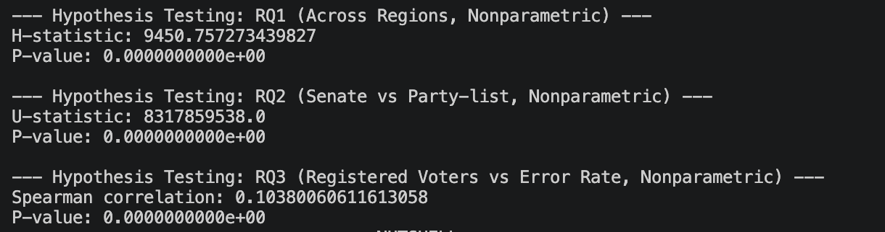

Overview
Background
Ensuring fair and reliable elections is essential for achieving the goals of SDG 16: Peace, Justice, and Strong Institutions. However, ballot errors such as overvotes and undervotes can affect the accuracy of election results and may indicate issues in ballot design, voter understanding, or precinct-level election management.
Previous research has shown that ballot characteristics, including length and number of candidates, significantly influence the likelihood of voting errors (Pachón et al., 2017; Bernardo et al., 2021). Understanding patterns in ballot error rates can therefore help identify whether certain factors contribute to these errors and improve electoral integrity.
Research Focus
This study analyzes ballot error rates in the 2025 Philippine Midterm Elections using precinct-level electoral data.
Research Questions
This study aims to analyze ballot error rates in the 2025 Philippine Midterm Elections using precinct-level electoral data. Specifically, the research investigates three key questions related to factors that may influence ballot errors. First, the study examines whether ballot error rates differ significantly across Philippine regions. Second, it investigates whether ballots with multiple candidates, such as senatorial ballots, produce higher error rates compared to party-list ballots. Third, the study analyzes whether the number of registered voters in a precinct is associated with ballot error rates.
To address these questions, the study will conduct statistical analyses using a large election dataset containing precinct-level information. These analyses include descriptive statistics, hypothesis testing, and regression models to examine relationships between ballot design, precinct characteristics, and ballot error rates.
Hypotheses
Based on the research questions, the study proposes several hypotheses regarding the relationships between ballot characteristics, precinct demographics, and voting errors. The study hypothesizes that ballot error rates vary significantly across Philippine regions, that senatorial ballots with multiple candidates exhibit higher error rates than party-list ballots, and that the number of registered voters per precinct is significantly associated with ballot error rates.
By testing these hypotheses using statistical methods, the research aims to identify factors that contribute to ballot errors and provide evidence-based insights that may support improvements in ballot design, voter education, and election management processes.
Data Collection
0
Precinct Records
0
Datasets
0
Senate Columns
0
Partylist Columns
Rows
92,822 original rows
Columns
78 (senate) • 167 (partylist)
Final Dataset
92,745 precincts
Dataset Description
This project will utilize the two 2025 Philippine Midterm Elections datasets. They contain precinct-level electoral data, including the number of registered voters, actual voters, overvotes, undervotes, valid votes, and vote counts per candidate for senatorial and party-lists.
These include overseas (OAV) and local absentee voting (LAV).
The senate results contained 92,822 rows (0 to 92,821) and 78 columns, while the partylist results contained 92,822 rows and 167 columns. However, 77 precincts with zero voters were removed to avoid undefined ballot error rate calculations, resulting in 92,745 rows.

Dataset Repository
The datasets used in this study are available in the repository links below. These datasets (in Google Sheets XLSX due to file size) contain the precinct-level electoral records used in the analysis.
Data Collection Process
The datasets were published by Vianney Tumbagahan on Figshare using the scraping script created by Professor Christian Alis, a Senior Data Scientist at the Asian Institute of Management. These datasets are originally sourced from the Commission on Elections (COMELEC) website.
For transparency, since May 21, 2025, the dataset has been updated to account for 23 missing election returns due to a bug with the scraping script. Fourteen were from Philippine results and nine from overseas absentee voting.
Version 2 of the dataset was used for this project. No sampling was applied because the dataset already contains the complete records of precinct results for the 2025 Midterm Elections.
Data Processing Pipeline
COMELEC Data
Scraping Script
Election Dataset

Data Cleaning
Statistical Analysis
Data Preprocessing
Steps Done During Preprocessing
1. Dataset Inspection
The CSV files were loaded using the Python Pandas library. General information of both datasets was checked using the info() function.
2. Duplicate Checks
The duplicated().sum() function was used to check for duplicates. No duplicate rows or duplicate machineID entries were found.
3. Removal of Zero Voters
Rows with actualVoters = 0 (77 precincts) were removed to prevent division-by-zero errors when computing ballot error rates.
4. Consistency Checks
All actual voters were verified to be less than or equal to registered voters. It was also confirmed that no precinct had zero registered voters.
5. Rate Calculations
Turnout rate and ballot error rate were calculated using: (actualVoters / registeredVoters) and (overVotes + underVotes) / actualVoters.
6. Export
Cleaned datasets and region-level summaries were exported as CSV files and uploaded to Google Sheets for further analysis.
Exploratory Data Analysis
During exploratory data analysis, key considerations were made in interpreting and preparing the data. First, the overVotes variable represents the number of excess selections rather than the number of voters who overvoted. This means that a single voter can contribute multiple overvotes if they select more candidates than allowed, resulting in values that may exceed the number of voters in a precinct.
Second, precincts with an errorRate greater than 1 were excluded from certain visualizations and analyses. These cases occur when the number of excess selections exceeds the total number of voters, indicating multiple invalid selections per voter on average. Such values reflect extreme error intensity rather than typical voting behavior and can distort the overall distribution. Therefore, they were removed to improve interpretability while preserving the meaningful patterns in the data.
Lastly, overseas Absentee Voting (OAV) and Local Absentee Voting (LAV) precincts were excluded from the analysis. These voting categories differ structurally from regular precincts in terms of voter composition, turnout behavior, and ballot handling procedures. In particular, OAV and LAV often involve aggregated or non-standard precinct sizes, which can introduce extreme or non-comparable values (unusually large numbers of registered voters). To ensure consistency and comparability across precinct-level analyses, only standard in-country precinct data were retained.
Research Question 1: Ballot Error Rates Differences Across Philippine Regions
Ballot error rates differ significantly across Philippine regions, indicating regional variation in voting behavior and ballot handling.
Research Question 2: Ballot Error Rates Differences Between Senate and Party-list
Senatorial ballots consistently exhibit higher error rates compared to party-list ballots, suggesting that ballot complexity increases the likelihood of voting errors.
Research Question 3: Registered Voters and Error Rate
This plot examines whether precinct size is associated with ballot error rates. Most precincts cluster within a similar range of registered voters, reflecting standardized precinct sizes in the electoral system. Although a slight upward trend may be observed, the relationship is weak because the data points are widely scattered across all levels of registered voters. For any given precinct size, there is a broad range of error rates, indicating no consistent pattern. This suggests that precinct size alone does not strongly influence voting errors. Note: The vertical clustering of points is due to many precincts having similar range of voter counts per precinct. While some outliers exceed 1,000 voters, the majority of precincts fall below 1000, resulting to a dense concentration of observations rather than a limitation or error in data.
Summary (Nutshell Plot)
This figure compares average ballot error rates for senatorial and party-list ballots across Philippine regions in the 2025 Midterm Elections. Across all regions, senatorial ballots have higher error rates than party-list ballots. Party-list error rates are generally low and similar across regions, while senatorial error rates are higher and vary more. The prominent pattern is that senatorial ballots consistently result in more errors. This suggests that the type of ballot, especially those with more candidates like the senatorial ballot, may affect how often voters make errors.
Hypothesis Testing
Choice of Statistical Methods
Before conducting hypothesis testing, the distribution of ballot error rates was examined using a histogram with a kernel density estimate (KDE). The distribution is highly right-skewed, with a concentration of low error rates and a long tail of extreme values. This indicates that the data do not follow a normal distribution.
Due to this non-normality and the presence of outliers, non-parametric statistical tests were used for analysis. These methods do not assume normality and are more appropriate for skewed distributions, ensuring more robust and reliable results.
Research Question 1: Differences Across Regions
Null Hypothesis (H₀): There are no significant differences in ballot error rates across Philippine regions.
Alternative Hypothesis (H₁): There are statistically significant differences in ballot error rates across Philippine regions.
A Kruskal–Wallis test was conducted to examine whether ballot error rates differ across Philippine regions. The results indicate a statistically significant difference in error rates between regions (H = 9450.76, p < 0.001). Therefore, the null hypothesis is rejected. This suggests that regional factors may influence voting errors, such as differences in voter behavior, ballot handling, or election administration practices.
Research Question 2: Senate vs Party-list
Null Hypothesis (H₀): There is no significant difference in ballot error rates between senatorial and party-list ballots.
Alternative Hypothesis (H₁): Ballot error rates are significantly higher in multi-candidate senatorial ballots compared to party-list ballots.
A Mann–Whitney U test was performed to compare ballot error rates between senatorial and party-list ballots. The results show a statistically significant difference between the two ballot types (U = 8.32 × 10⁹, p < 0.001). Therefore, the null hypothesis is rejected. Senatorial ballots exhibit higher error rates, suggesting that greater ballot complexity increases the likelihood of voting errors.
Research Question 3: Registered Voters and Error Rate
Null Hypothesis (H₀): There is no significant association between the number of registered voters per precinct and ballot error rates.
Alternative Hypothesis (H₁): The number of registered voters per precinct is significantly associated with ballot error rates.
A Spearman rank correlation was used to assess the relationship between the number of registered voters and ballot error rates. The analysis revealed a weak positive correlation (ρ = 0.104, p < 0.001). Therefore, the null hypothesis is rejected. However, the strength of the relationship is very weak, indicating that precinct size has minimal practical effect on voting errors.

Discussion
Results and interpretations will be added after statistical analysis.
Machine Learning Modelling
Predictive models and experiments will be presented here.
About Us
Wyndell Almazan
Mariel Sofia Pulbosa
Jesus Manuel Verzosa
This study was conducted by third-year Computer Science students from the University of the Philippines Diliman. The research focuses on analyzing ballot error rates in the 2025 Philippine Midterm Elections, examining patterns across regions, ballot types, and precinct sizes using statistical methods. The group aims to better understand the factors that may contribute to voter errors and to provide insights that could help improve the electoral process.
References
Bernardo, N., Pearson-Merkowitz, S., & Macht, G. A. (2021). The effect of ballot characteristics on the likelihood of voting errors. State Politics & Policy Quarterly, 22(2), 1–19. https://doi.org/10.1017/spq.2021.24
Pachón, M., Carroll, R., & Barragán, H. (2017). Ballot design and invalid votes: Evidence from Colombia. Electoral Studies, 48, 98–110. https://doi.org/10.1016/j.electstud.2017.05.005
Tumbagahan, V. (2025). 2025 Philippine Midterm Elections Data [Dataset]. Figshare. https://figshare.com/articles/dataset/2025_Philippine_Midterm_Elections_Data/29086472